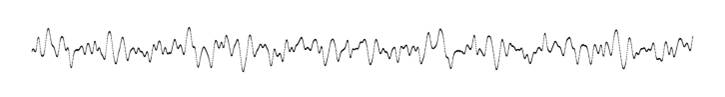
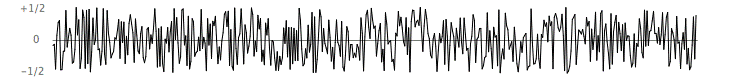
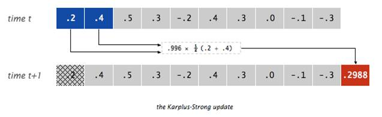
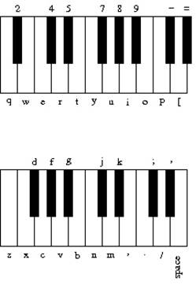

handout #3
CSE143—Computer Programming II
Programming Assignment #2
due: Thursday, 7/9/20,
11 pm AoE
many thanks to Kevin Wayne for this nifty assignment
This programming assignment will give you
practice with queues, interfaces, objects, and arrays of objects. You are going to implement two classes that
allow us to simulate a guitar. We will
be using two utility classes known as StdAudio and StdDraw that are used in the
Princeton intro CS course. You don’t
have to understand the details of these utility classes, but if you are
interested, you can read about them at the following url:
http://introcs.cs.princeton.edu/java/stdlib/
When a guitar string is plucked, the
string vibrates and creates sound. The length of the string determines its
fundamental frequency of vibration. We model a guitar string by sampling its
displacement (a real number between -1/2 and +1/2) at N equally spaced points
(in time), where N equals the sampling rate (44,100) divided by the fundamental
frequency (rounded to the nearest integer).
We store these displacement values in a structure that we will refer to
as a ring buffer.

Plucking
the string
The
excitation of the string can contain energy at any frequency. We simulate the
excitation by filling the ring buffer with white noise: set each of the N
sample displacements to a random real number between -1/2 and +1/2.

The
resulting vibrations
After
the string is plucked, the string vibrates. The pluck causes a displacement
which spreads wave-like over time. The Karplus-Strong algorithm simulates this
vibration by maintaining a ring buffer of the N samples: for each step the
algorithm deletes the first sample from the ring buffer and adds to the end of
the ring buffer the average of the first two samples, scaled by an energy decay
factor of 0.996.

Why
it works
The
two primary components that make the Karplus-Strong algorithm work are the ring
buffer feedback mechanism and the averaging operation.
·
The
ring buffer feedback mechanism: The ring buffer models the medium (a string
tied down at both ends) in which the energy travels back and forth. The length
of the ring buffer determines the fundamental frequency of the resulting sound.
Sonically, the feedback mechanism reinforces only the fundamental frequency and
its harmonics (frequencies at integer multiples of the fundamental). The energy
decay factor (.996 in this case) models the slight dissipation in energy as the
wave makes a roundtrip through the string.
·
The
averaging operation: The averaging operation serves as a gentle low pass filter
(which removes higher frequencies while allowing lower frequencies to pass,
hence the name). Because it is in the path of the feedback, this has the effect
of gradually attenuating the higher harmonics while keeping the lower ones,
which corresponds closely with how actually plucked strings sound.
Part
1: GuitarString Class
In the first part of the assignment, you
will implement a class called GuitarString that models a vibrating guitar
string of a given frequency. The
GuitarString object will need to keep track of a ring buffer. You are to implement the ring buffer as a
queue using the Queue<E> interface and the LinkedList<E>
implementation. You are limited to the
queue methods in Table 14.2 on page 888 of the textbook (add, remove, isEmpty,
size, and peek). You are not allowed to
use other data structures or other queue methods to solve this problem.
Your class should have the following
public methods.
|
Method |
Description |
|
GuitarString(double
frequency) |
Constructs
a guitar string of the given frequency.
It creates a ring buffer of the desired capacity N (sampling rate
divided by frequency, rounded to the nearest integer), and initializes it to
represent a guitar string at rest by enqueueing N zeros. The sampling rate is specified by the
constant StdAudio.SAMPLE_RATE. If the
frequency is less than or equal to 0 or if the resulting size of the ring
buffer would be less than 2, your method should throw an
IllegalArgumentException. |
|
GuitarString(double[]
init) |
Constructs
a guitar string and initializes the contents of the ring buffer to the values
in the array. If the array has fewer
than two elements, your constructor should throw an
IllegalArgumentException. This
constructor is used only for testing purposes. |
|
void
pluck() |
This
method should replace the N elements in the ring buffer with N random values
between -0.5 inclusive and +0.5 exclusive (i.e. -0.5 <= value < 0.5). |
|
void
tic() |
This
method should apply the Karplus-Strong update once (performing one step). It should delete the sample at the front of
the ring buffer and add to the end of the ring buffer the average of the
first two samples, multiplied by the energy decay factor (0.996). Your class should include a public constant
for the energy decay factor. |
|
double
sample() |
This
method should return the current sample (the value at the front of the ring
buffer). |
You will be provided with a testing
program that you can use to verify that your class has the basic functionality
that is required. The testing program
will not check to make sure that you are using a queue and that you are
checking for appropriate exceptions to throw and that you are using the queue
efficiently.
It is difficult in commenting the
GuitarString class to know what constitutes an implementation detail and what
is okay to discuss in client comments.
Assume that a client of the GuitarString class is familiar with the
concept of a ring buffer and the Karplus-Strong algorithm. The fact that we are implementing it as a queue
is an implementation detail. So don’t
mention how you implement the ring buffer.
But you can discuss the ring buffer itself and the changes that your
methods make to the state of the ring buffer (e.g., moving values from the
front to the back of the ring buffer).
Normally we would encourage you to write a
single constructor and to use the “this(…)” notation
to have one constructor call another.
That won’t be possible for the GuitarString class because the two
constructors are completely different.
Because you are using Java’s queue
structure to implement the GuitarString, you will need to include this import
declaration at the beginning of the class:
import java.util.*;
Part
2: Guitar37 Class
In
the second part of the assignment, you are going to build on the GuitarString
class to write a class that keeps track of a musical instrument with multiple
strings. There could be many possible
guitar objects with different kinds of strings.
As a result, we introduce an interface known as Guitar that each guitar
object implements.
The Guitar interface is defined as
follows:
public interface Guitar {
public void playNote(int pitch);
public boolean hasString(char key);
public void pluck(char key);
public double sample();
public void tic();
public int time();
}
The interface allows a client to specify
what to play in one of two ways. A
client can specify exactly which note to play by calling the playNote method
passing it a pitch. Pitch is specified
as an integer where the value 0 represents concert-A and all other notes are
specified relative to concert-A using what is known as a chromatic scale. Not every value of pitch can be played by any
given guitar. If it can’t be played, it
is ignored.
A client can also specify a character that
indicates which note to play by calling the pluck method. Different guitar objects will have different
mappings from characters to notes. The
interface includes a method called hasString that is paired with pluck that
lets a client verify that a particular character has a corresponding string for
this guitar. The pluck method has a
precondition that the key is legal for this guitar.
The Guitar interface also has methods for
getting the current sound sample (the sum of all samples from the strings of
the guitar), to advance the time forward one “tic,” and an optional method for
determining the current time (the number of times tic has been called). If the time method is not implemented, it
returns -1. You should implement the
time method in Guitar37.
You are being provided with a sample class
called GuitarLite that implements the Guitar interface. Once you have verified that your GuitarString
class passes the testing program, you can play the GuitarLite instrument. It has only two strings: a
and c. Keep in mind that
GuitarLite does not have a main method.
There is a separate class called GuitarHero that has main (the initial
version constructs a GuitarLite object).
In this second part of the assignment,
your task is to make a variation of GuitarLite known as Guitar37. It will model a guitar with 37 different
strings. Because it has so many strings,
we will want to keep track of them in a data structure. Your Guitar37 objects should each keep track
of an array of 37 GuitarString objects.
The Guitar37 class has a total of 37 notes
on the chromatic scale from 110Hz to 880Hz. We will use the following string to map keys
typed by the user to positions in your array of strings. The i-th character
of this string should correspond to the i-th character of your array:
"q2we4r5ty7u8i9op-[=zxdcfvgbnjmk,.;/' "
This use of keyboard characters imitates a
piano keyboard, making playing songs a little easier for people used to a piano
keyboard. The white keys are on the qwerty and zxcv
rows and the black keys on the 12345 and asdf rows of the keyboard, as in the
drawing below.

You are being provided a skeleton version
of the Guitar37 class that includes this string defined as a constant called
KEYBOARD. The i-th character of the
string corresponds to a frequency of 440 × 2(i - 24) / 12, so that
the character “q” is 110Hz, “i” is 220Hz, “v” is 440Hz, and “
” (space) is 880Hz.
As
noted above, a pitch of 0 is supposed to correspond to concert-A, which will be
at index 24 for the Guitar37 object (corresponding to the character “v”). Thus,
you can convert from a pitch value to an index in your string by adding 24 to
the pitch value. The table below shows
some examples of this conversion.
|
Key |
Pitch |
|
"q" |
-24 |
|
"2" |
-23 |
|
"w" |
-22 |
|
"e" |
-21 |
|
... |
... |
|
"v" |
0 |
|
... |
... |
|
"/" |
10 |
|
"'" |
11 |
|
" " |
12 |
In working on this second part of the
assignment, you are generalizing the code that you will find in
GuitarLite. Because that instrument has
just two strings, it uses two separate fields.
Your instrument has 37 strings, so it uses an array of strings. Each of the operations defined in the
interface needs to be generalized from using two specific strings to using an
array of strings. For example, the sample
method returns the sum of the current samples.
GuitarLite does this by adding together two numbers. Your version will have to use a loop to find
the sum of all 37 samples.
The GuitarLite class is not well
documented and does not handle illegal keys.
Your Guitar37 class should include complete comments. The pluck method should throw an
IllegalArgumentException if the key is not one of the 37 keys it is designed to
play (as noted above, this differs from the playNote method that simply ignores
notes it cant play). Recall that strings have an indexOf method
that you might find helpful.
As noted in the description of the interface,
the method called time is optional. It
is not implemented in the GuitarLite class, but you should implement it in the
Guitar37 class.
In order to run the program, you will have
to have the files StdAudio.java and StdDraw.java in the same folder as your other
class files. Remember that the main
method runs indefinitely. As
demonstrated in lecture, you can select a quit option from the GuitarHero
window that pops up or you can use the End command in jGRASP.
As mentioned earlier, the ring buffer in
your GuitarString class should be implemented as a queue. You are allowed to use any of the methods
defined in the Queue interface. In
particular, you are allowed to use the peek method that allows you to examine
the value at the front of the queue without removing it. The GuitarString class would be inefficient
if you didn’t have the ability to peek at the front of the queue.
To generate random real numbers, you can construct a Random object and
call its nextDouble method. This will
return a random real value n such that 0 ≤ n
< 1.
You will be given a testing program for
Guitar37 as well called TestGuitar37. This
testing code should be stored in a separate directory from your solution
because it includes a custom version of the GuitarString class and you don’t
want to accidentally overwrite your version of the class. You should copy your Guitar37 class to this
folder, run it, and then compare against the sample output produced using the
output comparison tool.
In terms of correctness, your class must
provide all of the functionality described above and must satisfy all of the
constraints mentioned in this writeup.
In terms of style, we will be grading on your use of comments, good
variable names, consistent indentation, minimal fields and good coding style to
implement these operations.
It is likely that you will make a mistake
somewhere in specifying your generic structures. When you do so, the Java compiler will warn
you that you have “unchecked or unsafe operations” in your program. You will lose style points if you don’t fix
these warnings. You can have jGRASP show
you the exact line by going to: Settings/Compiler Settings/Workspace/Flags/Args
and then uncheck the box next to "Compile" and type in:
-Xlint:unchecked
You should name your files
GuitarString.java and Guitar37.java and you should turn them in electronically
from the “Homework” tab on the class web page. Make sure you turn in the correct GuitarString
file (not the testing one) and turn in your reflection.txt file